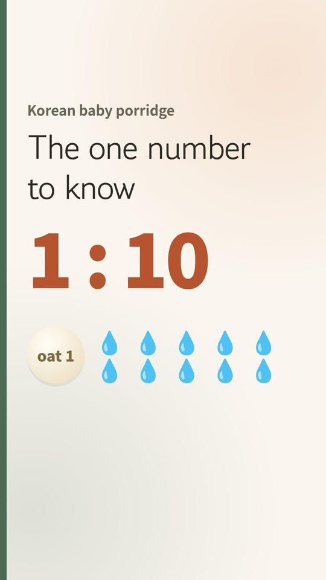

Meokbo Dad's Baby Food Notes › Korean baby porridge
Korean baby porridge: the 1:10 ratio
Korean recipes describe baby porridge by a number: 10-times porridge means 1 part grain to 10 parts water. The number drops as your baby grows, until it's soft rice.
The ratio by stage
| Ratio | When | Texture |
|---|---|---|
| 1 : 10 | First days (around 6 months) | Pours off a tilted spoon |
| 1 : 8 – 1 : 9 | From week 2–3 | Drips, then breaks off |
| 1 : 6 – 1 : 8 | Two meals a day | Sits on the spoon, a little grainy |
| 1 : 4 – 1 : 6 | Around 9–11 months | Soft, grains visible |
| 1 : 2 – 1 : 4 | From 12 months | Very soft rice |
Your baby sets the pace, not the calendar. If they swallow easily and don't hold food in their mouth, go one step thicker. If they gag or keep spitting out, go back a step for a few days.
Water or vegetable stock? From two meals a day, we cooked the porridge with unsalted vegetable stock instead of plain water. Plain water is completely fine. If you use stock, pick one labelled "no salt added" ("low sodium" still contains salt), and skip stock cubes or bouillon, which are too salty for babies (NHS).

🎬 Watch the 30-second short
How to make it
- Whisk 10 g oat flour (or plain rice flour, not glutinous) into 100 ml cold water.
- Simmer on low, stirring, 5–7 minutes until smooth and cooked through.
- Spoon test: it should pour off a tilted spoon. Cool, then portion.
- Fridge: use within 2 days (cooked rice within 24 hours). Or freeze in cubes and reheat once until steaming, then cool.
 📌 Save to Pinterest
📌 Save to PinterestWhy oats as well as rice?
Korean babies traditionally start on rice. US pediatric guidance says rice shouldn't be the only grain, because rice absorbs more arsenic than other crops. Using the same ratio, oat flour works the same way, so rotate the two.
The Korean First Foods Plan (PDF) · $9.995 weeks, day by day · US/UK ingredient swaps · allergen weeks · printable tracker · instant download on Etsy ›American Academy of Pediatrics, HealthyChildren.org: Reduce Arsenic (2023). NHS: Storing and reheating food.